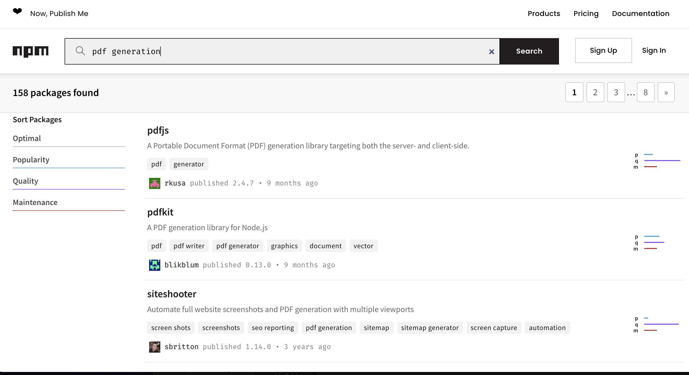
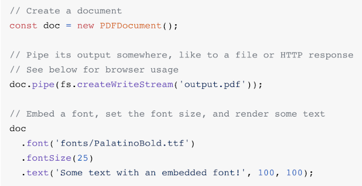
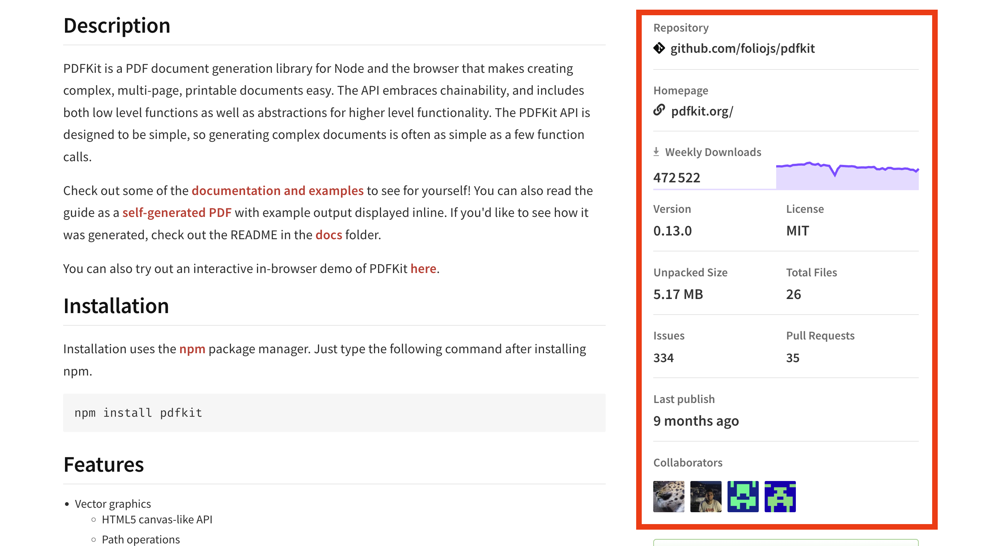
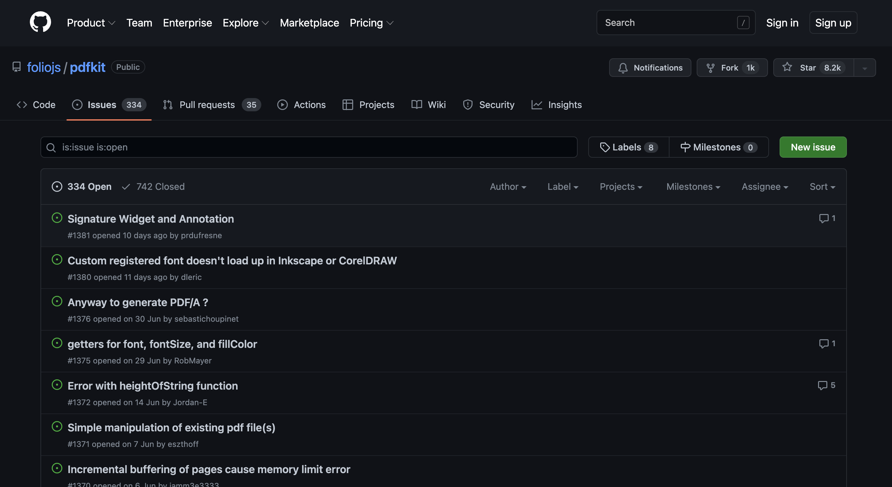
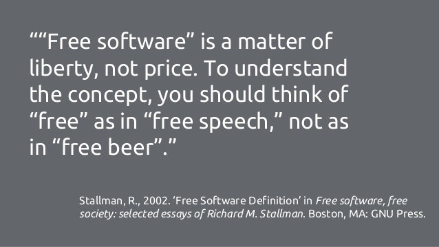

Node 04 - 🔧 Rechercher et choisir un paquet npm (ou pas !)
Objectifs
- Remettre en question la réelle nécessité d'ajout d'un paquet.
- Rechercher et choisir des paquets de manière efficace.
- Comprendre et limiter les risques associés aux paquets NPM.
Pré-requis
- 1
Valider la quête suivante
Quêtes liées
Introduction
Imaginons que nous voulons créer un logiciel de facturation et que nous devons générer des fichiers PDF. Nous pourrions passer des semaines ou des mois à implémenter nous-mêmes toute la logique liée à la génération de fichier PDF. Ou bien, nous pourrions chercher sur npmjs.com si quelqu'un a déjà fait quelque chose de similaire. Cela nous permettrait de construire notre application avec, et de gagner un temps précieux pour faire d'autres choses !
NPM est un outil formidable car il permet à la communauté JS de partager du code afin de construire des applications plus vite. Mais la gestion des dépendances s'accompagne de certains problèmes et pièges dont tu dois avoir conscience.
Sommaire
Tu en as vraiment besoin ?
La première question à se poser est la suivante : "Ai-je vraiment besoin d'un paquet pour celà" ?
Comme tu le verras rapidement, les dépendances externes comportent certains risques et génèrent parfois une dette technique. Il est donc préférable de les limiter dans nos projets.
D'un autre côté, de très bonnes dépendances peuvent nous faire gagner beaucoup de temps lors de la construction et de la maintenance de l'application.
C'est toujours un dilemme : Rechercher un paquet, lire la documentation, essayer plusieurs options... Est-ce du temps de gagné ? Combien de temps cela prendrait pour apporter une solution similaire sans le paquet ? Si le paquet ne te fait gagner que quelques lignes de code, tu devrais peut-être reconsidérer les choses.
Par exemple, jette un coup d'œil à ce paquet. Ce qu'il fait est très simple : il exporte une fonction qui renvoie true si le nombre passé en argument est pair, et false sinon. Nous pouvons littéralement écrire quelque chose de similaire avec quelques lignes de code :
function isEven(n) {
return n % 2 === 0;
}
Si tu fais quelques recherches, tu découvriras que le paquet is-even effectue des vérifications supplémentaires sur l'entrée. Mais en avons-nous vraiment besoin dans notre cas ?
Voici un site web qui propose des alternatives à l'utilisation de certaines bibliothèques :
You might actually need this website !
Pour faire court !
Est-ce que c'est pertinent d'installer une dépendance qui permet d'économiser 10 lignes de code "simples" ? Probablement pas.
La recherche d'une bibliothèque pour la génération de fichiers PDF en vaut-elle la peine ? Eh bien, probablement oui !
Rechercher et choisir des paquets.
Cherchons "pdf generation" sur le site de NPM.

Tu peux voir que plus d'une centaine de paquets correspondent à notre recherche et peuvent potentiellement nous aider à répondre à notre besoin. Plutôt chouette, à première vue !
C'est la beauté de l'open source : la communauté partage des morceaux de code prêts à l'emploi. Cela permet aux autres membres de la communauté de gagner un temps considérable.
Génial, mais comment choisir parmi tant de paquets ? Comment savoir si un paquet va m'aider à résoudre mon problème ? Est-il toujours gratuit ? Y a-t-il des risques ?
Avant de répondre à ces questions, allons sur la page de ce paquet et regardons les détails. Nous pouvons voir des informations très utiles :
- La description du paquet : les problèmes qu'il permet de résoudre, les principales fonctionnalités actuellement supportées, etc.
- Le processus d'installation.
- Des exemples d'utilisation.
- Un lien vers une documentation plus détaillée.
- Des informations sur la licence.
- À droite de la page : le site officiel, le nombre de téléchargements par semaine, la version actuelle, etc.
Comment savoir si un paquet va me permettre de résoudre mes problèmes ?
Lis la description du paquet, et surtout les exemples pour voir comment le paquet fonctionne exactement. Dans notre exemple, nous pouvons voir que ce paquet semble être un bon choix car il nous permettra de créer un document PDF, d'insérer du texte, d'ajuster les styles des éléments et d'enregistrer un fichier PDF sur le disque. Nous pouvons voir tout cela juste en regardant les exemples dans les détails du paquet :

Cela peut répondre à notre besoin pour notre application de facturation.
Comment choisir entre plusieurs paquets ?
Si plusieurs paquets traitent le même problème, aucune méthode magique n'existe pour trouver le meilleur (à part les tester tous dans tous les cas d'utilisation, mais tu n'auras probablement pas le temps pour cela !)

Cependant, un bon conseil peut être d'essayer les paquets avec le plus grand nombre de téléchargements hebdomadaires ou ceux qui semblent les plus stables et maintenus. Pour cela, n'hésite pas à regarder les issues du projet et d'autres statistiques comme l'activité des commits sur GitHub !

Plus le paquet est téléchargé et soutenu par la communauté, plus il est probable que ce paquet soit réellement "bon" et plus tu pourras obtenir de l'aide lors de son utilisation.
Au moment où j'écris cette quête, le paquet mentionné ci-dessus compte plus de 470 000 téléchargements hebdomadaires. C'est un chiffre tout à fait décent ! Nous pouvons être sûrs que ce paquet a déjà été intégré dans de vrais projets et que la communauté qui l'utilise est assez importante. Cela devrait être relativement facile d'obtenir de l'aide si quelque chose ne va pas ou si nous devons modifier quelque chose.
Essaie-tu de résoudre le bon problème ?
Et si notre problème était plus spécifique ? Au lieu de "nous avons besoin de générer des fichiers PDF", nous pourrions avoir des informations supplémentaires comme "nous avons besoin de générer des fichiers PDF et nous avons déjà des fichiers HTML/CSS correspondants". Ensuite, nous pourrions rechercher "html pdf" au lieu de "pdf" ou "pdf generation" afin de trouver quelque chose qui convertirait nos fichiers existants.
Et si le problème était plus général ? Et si le besoin réel était de générer des factures qui pourraient être facilement imprimées, pas nécessairement en PDF ? Dans ce cas, une option alternative pourrait être d'adapter simplement un fichier CSS pour les supports d'impression et de ne pas générer de PDF du tout !
Dans la mesure du possible, n'hésite pas à remettre en question le problème lui-même avant de te précipiter dans la recherche et l'adoption d'une solution donnée. Peut-être pourras-tu gagner du temps en reformulant ton problème d’une manière plus pertinente.
Problèmes courants avec les paquets NPM
Est-ce totalement gratuit ? Si oui, qu'est-ce que cela signifie ?
Les paquets publics présents sur le site de NPM sont tous open source, ce qui peut signifier, dans une certaine mesure, "libre".
Toutefois, selon le fondateur de la Free Software Foundation, Richard Stallman, un logiciel "libre" ne signifie pas nécessairement qu’il est gratuit "free as in free beer".

Néanmoins, tu verras que la grande majorité des paquets sur NPM sont effectivement utilisables sans coût monétaire. Pour être sûr, tu peux vérifier les informations de la licence du paquet pour voir ce qui est autorisé ou non.
Dans notre exemple, le paquet est placé sous la licence MIT, qui est très permissive. Donc oui, nous pourrons utiliser ce paquet comme nous le souhaitons dans notre application sans verser de rémunération aux auteurs du paquet.
Même si nous ne devons pas payer de l'argent pour utiliser ce paquet, d'autres coûts peuvent exister. Par exemple, si je choisis ce paquet, mes collègues et moi devrons apprendre à utiliser la bibliothèque, ce qui nous coûtera du temps (qui peut éventuellement se traduire en argent).
De plus, tu es sur le point de voir qu'en installant ce paquet, nous prenons également certains risques.
Un article sur le coût des paquets NPM que vous ajoutez à un projet
(Oui, tu devrais)
Un outil pour découvrir les licences des paquets que tu utilises
Quels sont les risques ?
Très bonne question. Comme tout le monde peut publier des paquets NPM, il peut y avoir des manques en termes de qualité du code, de fiabilité, de documentation, etc.
N'oublie pas que beaucoup de logiciels open source sont fournis sans aucune garantie.
Pire, certains paquets présentent des vulnérabilités de sécurité et certains d'entre eux sont même malveillants 👿.
Les paquets sont du code écrit par "quelqu'un d'autre" (appelons-le/la Bobbie) et ce code sera exécuté sur une machine (que ce soit ta machine personnelle ou un serveur distant).
La plupart des "Bobbies" sont bienveillants et fournissent du code utile, mais pas tous. Certains ont des arrière-pensées et veulent que tu exécutes leur code. Quelques exemples de ce que pourrait vouloir faire un "Bobbie" mal intentionné :
- voler tes données
- ouvrir une brèche de sécurité sur ton serveur
- utiliser ton serveur pour lui-même (minage de crypto-monnaies, par exemple).
L'utilisation de paquets peu connus ou nouveaux peut t'exposer à ces "méchants Bobbies". C'est un cas rare, mais pas impossible.
C'est pourquoi tu devrais toujours t'en tenir aux paquets bien connus, ou à ceux qui ont été audités par la communauté.
Nous pouvons aussi parler du risque de nuire aux performances. Pour faire court : certaines dépendances sont très lourdes et peuvent ralentir ton application ou tes outils de développement.
Parce que les risques sont réels, tu dois faire attention lorsque tu décides d'ajouter une dépendance à un projet.
❓Quizz
true|||true|||true
# Nous devons résoudre un problème spécifique sur un projet...
[] Cherchons et essayons tous les paquets liés à ce problème sur NPM.
[x] Remettons en question la pertinence du problème lui-même, puis si les avantages de l'ajout d'un paquet peuvent potentiellement dépasser les inconvénients, recherchons et essayons les "paquets sûrs".
# Quels peuvent être les signes d'un "bon paquet" ?
[x] La documentation est bien faite et facile à lire.
[] Il est tout nouveau et tout le monde en parle.
[x] Il y a une grande communauté derrière lui (beaucoup de téléchargements hebdomadaires, beaucoup d'étoiles Github).
[x] Les problèmes importants qui pourraient nous affecter sont traités rapidement.
[] Le dernier commit sur le github du paquet a été fait il y a plus de 5 ans.
[x] Le paquet est testé, avec une bonne couverture de code.
[] L'auteur est célèbre.
[x] Des projets importants reposent sur ce paquet.
# Il y a des paquets malveillants sur NPM
[x] Vrai
[] Faux
# Avec les paquets NPM, nous pouvons faire ce que nous voulons sans payer quoi que ce soit.
[] Oui, ils sont tous open-source !
[x] Non, nous devons vérifier les licences pour nous assurer que nous pouvons légalement faire ce que nous voulons.
# L'ajout d'une dépendance pourrait nuire aux performances de notre application.
[x] Vrai
[] Faux
# Tous les paquets sont accompagnés d'une assurance de qualité et d'une assistance.
[x] Non, la grande majorité est livrée sans aucune garantie.
[] Oui
# Nous devons éviter les dépendances dans nos projets ?
[] Non
[] Oui
[x] Les "bonnes" dépendances sont en fait utiles et valent la peine d'être utilisées, mais il faut y réfléchir à deux fois avant d'en ajouter une à un projet, car elles peuvent aussi avoir des inconvénients.